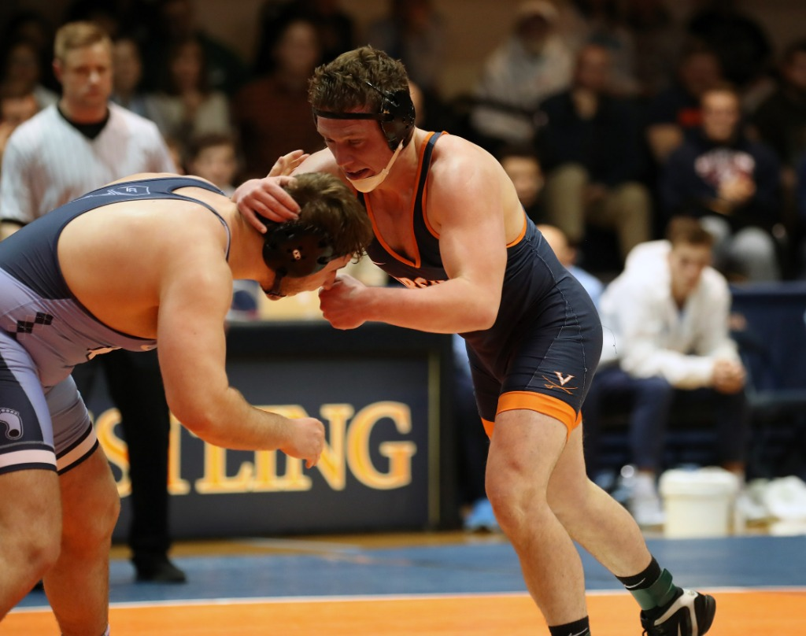

By Chad Whych | 11/06/2019

The Virginia wrestling team finished fifth in the ACC last season with an overall record of 12-10 and a conference record of 1-4. The Cavaliers (2-0, 0-0 ACC) return this year ranked No. 24 in the NCAA preseason wrestling rankings.
Virginia has four returning NCAA tournament qualifiers. Two currently unranked returning qualifiers include sophomore Cam Coy and senior Sam Krivus. Junior Jay Aiello currently ranks ninth in the 197 weight class. Senior Jack Mueller is returning from a runner-up finish to Iowa’s Spencer Lee in the NCAA finals and currently ranks second at 125 pounds.
Although the group of national qualifiers helped lead the Cavaliers to two victories this weekend, the performance was a team effort.
In its first match of the Cavalier Duals Saturday, Virginia posted four pinfalls and four technical falls against Southern Virginia (0-2, 0-0 CAC). The Cavaliers then went on to defeat Maryland (1-1, 0-0 Big Ten) by a margin of 34-6.
Throughout the home dual meet only three Virginia wrestlers fell to opponents. Overall, the team conceded nine points and recorded 84.
“We took some big steps forward and [looked] better today than we did just two weeks ago,” Coach Steve Garland said.
Following the home duals, multiple Virginia wrestlers traveled to Roanoke, Va. for the Southeast Open Sunday. Of the 16 competitors, two Cavaliers placed in the freshman/sophomore bracket and two placed in the open division of the tournament.
Freshmen Nick Coy wrestled his way to the finals for a second place finish at 141 pounds while freshman Justin Phillips placed sixth at 165 pounds. In the open division, junior Drew Peck placed sixth at 184 pounds, and sophomore Robert Patrick took a fourth place finish at 174 pounds.
Virginia will continue to build on the standard of growth set this weekend.
The Cavaliers travel to Albany, N.Y. to compete in the Journeymen Duals Saturday. They will step on the mat against hosts Long Island University Post and No. 8 Arizona State. Virginia’s matchup against the Sun Devils will be an early test and further set the tone for the Cavaliers’ season.